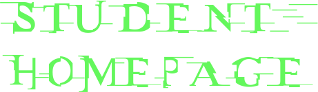
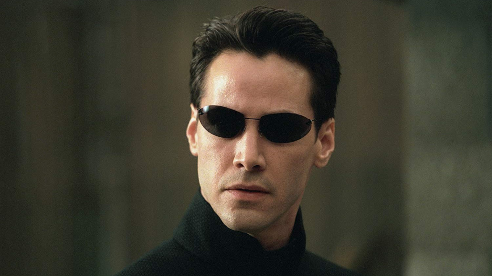

-

-
Neo (born as Thomas A. Anderson, also known as The One, an anagram for Neo) is a fictional character and the protagonist of the Matrix franchise. He was portrayed as a cybercriminal and computer programmer by Keanu Reeves in The Matrix Trilogy, as well as having a cameo in The Animatrix short film Kid's Story. Andrew Bowen provided Neo's voice in The Matrix: Path of Neo. In 2008, Neo was selected by Empire as the 68th Greatest Movie Character of All Time. Neo is also an anagram of "one", a reference to his destiny of being The One who would bring peace.There are claims that a nightclub in Chicago inspired the name of the character in the Matrix.